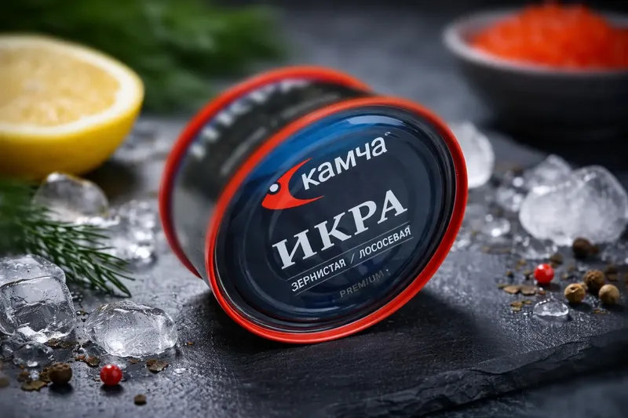

Икра
Икра лососевая “Камча”
Цена и наличие
Цена уточняется. Нет в наличии.
Данные на 23.11.2026.
Характеристики
- Размерный ряд
- 130 г
- Упаковка
- железная банка
Описание
Икра лососевых считается деликатесом и символом роскоши. Ее наличие на столе придает особый шарм и позволяет порадовать гостей.
ОСНОВНОЕ
Упаковка железная банка Пищевая ценность на 100 г продукта белки – 31 г, жиры – 12 г, углеводы – 0 г Энергетическая ценность на 100 г продукта 232 ккал Состав – Условия и срок хранения хранить при температуре от -4 ℃ до -6 ℃ срок хранения не более 12 месяцев с даты производства; температура хранения икры -4 -6, а в бытовом холодильнике +4 +6, храним в нулевой зоне не больше 14 дней; с момента вскрытия банки храним не более 2 суток
ДОПОЛНИТЕЛЬНО
Лососевая икра «Камча» — красная икра для классической подачи, приготовления бутербродов, блинов, тарталеток, канапе и других холодных закусок. Продукт подойдет как для повседневного меню, так и для праздничного стола. Красная лососевая икра отличается характерным рыбным вкусом и нежной текстурой икринок. Ее можно подавать как самостоятельную закуску или использовать в сочетании с другими продуктами. Особенно хорошо икра сочетается со свежим хлебом, тостами, сливочным маслом, сливочным сыром, яйцами и блинами. Икра «Камча» подходит для приготовления праздничных закусок и сервировки готовых блюд. Ее используют для бутербродов и тарталеток, добавляют в канапе, подают на рыбных тарелках или используют как яркий акцент при оформлении холодных блюд. Лососевая икра удобна для тех случаев, когда требуется универсальный продукт для быстрого приготовления закусок. Даже простая подача с хлебом или блинами позволяет получить готовое блюдо без сложного приготовления. В продаже — лососевая икра «Камча». Продукт подойдет для домашнего стола, семейного застолья, праздничного меню и приготовления разнообразных закусок с красной икрой. Заказать лососевую икру «Камча» можно для бутербродов, блинов, тарталеток, канапе и других блюд с красной икрой.